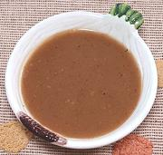

|
Brown GravyWorldwide | ||||
| Makes: Effort: Sched: DoAhead: |
2 cups ** 30 min 1 week |
Traditionally, Brown Gravy is made from "drippings" from roasting a large hunk of beef - something we're not doing much these days. Here's a reasonable solution for recipes. | |||
|
|
2 1 3 2-1/2 1-1/2 2 1 1/2 1/4 |
c cl T T T T t t t |
Beef Broth (1) Garlic Butter Flour, allpurp Potato Starch Water Worcestershire Salt Pepper |
Do-Ahead: - (5 min to 5 hrs)
|